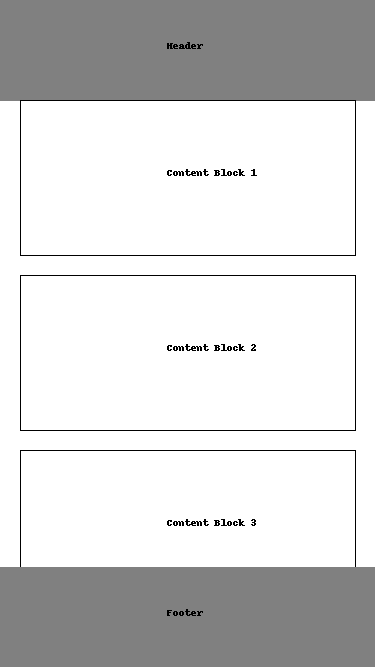
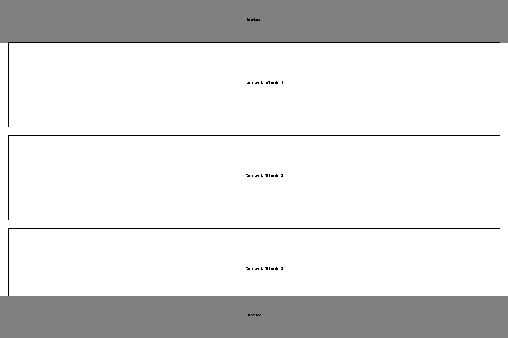

Site Name
The site name is "Barranquilla Chamber of Commerce". This name reflects the primary focus of the website, which is to represent and promote the business interests of the Barranquilla area through the local chamber of commerce.
Site Purpose
The purpose of the Barranquilla Chamber of Commerce website is to:
- Promote the business interests of the chamber members and attract new businesses to the area.
- Provide a platform for business networking and community engagement.
- Highlight the attractions, events, and economic opportunities in Barranquilla.
Scenarios
Three scenarios for visitors to the website are:
- What events will the chamber be holding this month that promote business-to-business networking?
- Where can I find contact information for the chamber's board of directors?
- What has been the population growth in the area?
Color Schema
The color schema for the website includes:
- #003366 for headers and footers.
- #FFCC00 for highlights and accents.
Typography
The typography for the website includes:
- Arial for body text.
- Georgia for headings.
Wireframe
Below are the rough sketches for the home page layout:

